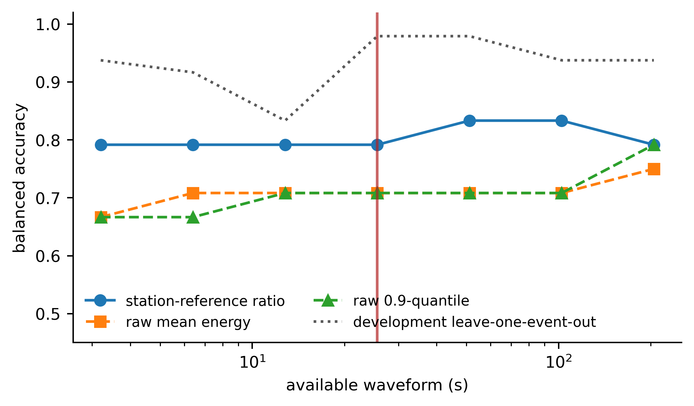
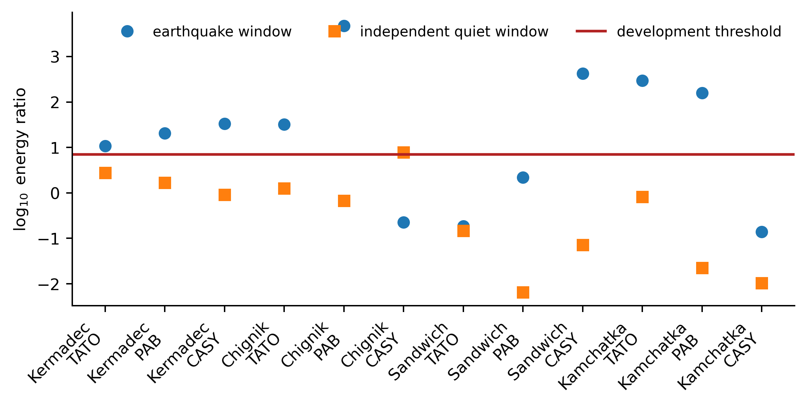
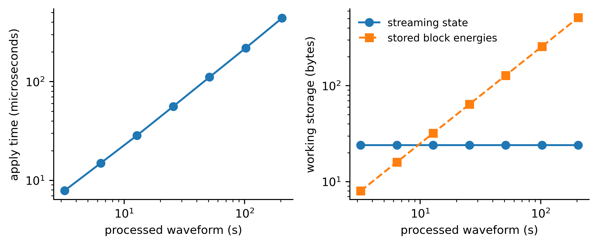

Registered confirmation result
The paired 95 percent interval for the balanced-accuracy improvement is [-0.083, 0.250]. The observed improvement is not statistically resolved. Four event windows are missed and one quiet window produces a false alarm.
Evidence organized by claim



Fixed-prefix comparison
| Method | Balanced accuracy | Sensitivity | Specificity | AUC |
|---|---|---|---|---|
| Station-reference ratio | 0.792 | 0.667 | 0.917 | 0.833 |
| Raw mean energy | 0.708 | 0.833 | 0.583 | 0.833 |
| Raw 0.9-quantile | 0.708 | 0.833 | 0.583 | 0.833 |
Source and partition contract
The study references 108 original EarthScope FDSN responses totaling 66,981,395 bytes. USGS ComCat supplies the event metadata. Development uses eight earthquakes. Confirmation uses four later events and the previously unused stations TATO, PAB, and CASY. Every response is bound to its source URL and SHA-256 digest.
The statistic compares an event-aligned candidate with a one-day-offset station reference. A distinct two-day-offset trace supplies the negative. The confirmation set is opened only after the eight-block prefix and threshold are fixed.
Exact replay
cd code
python -m pip install -e '.[test,figures]'
python -m pytest -q
cd ..
station-energy-study --offline --verifySemantic hash: 6121bb9eaa0affe7f9b3fb7e5973e552260f180f8c4a13e2b86042ebad93c655